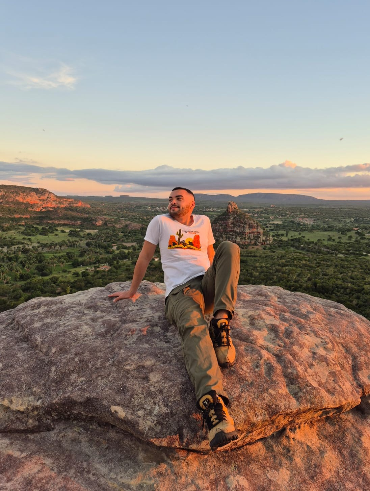
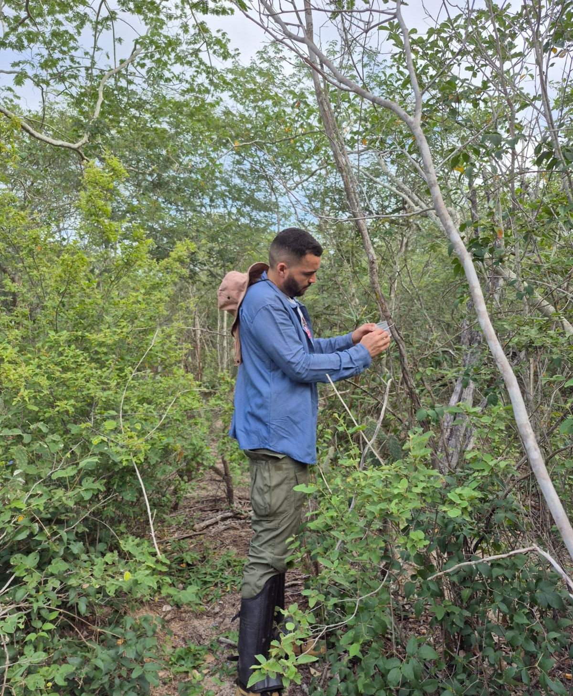
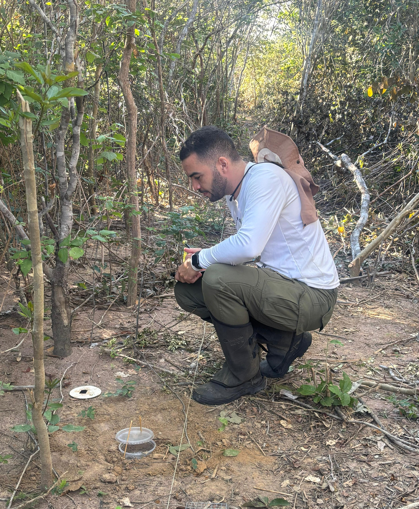

Cícero Luanderson da Silva Alencar
Doutorado em Biologia Vegetal — Universidade Federal de Pernambuco (UFPE)
- Interações planta–formiga
- Mutualismos em paisagens perturbadas
- Ecologia da Caatinga
- Nectários extraflorais
Sobre
Doutorando em Biologia Vegetal (área de concentração: Ecologia e Conservação) pela Universidade Federal de Pernambuco (UFPE), com bolsa de doutorado sanduíche no Instituto de Ecologia da Universidade Nacional Autônoma do México (UNAM). Vinculado ao Laboratório de Interação Planta-Animal do LIPA, desenvolve pesquisas nas áreas de ecologia e botânica, com ênfase em interações planta–formiga. Suas pesquisas investigam os efeitos de perturbações antrópicas e de fatores abióticos sobre o funcionamento de mutualismos planta–formiga na Caatinga, buscando elucidar os mecanismos ecológicos que regulam a dinâmica temporal dessas interações em paisagens submetidas a mudanças no uso da terra e a fortes variações climáticas sazonais.
Mestre em Ecologia e Recursos Naturais pela Universidade Federal do Ceará (UFC, 2021), com dissertação sobre a variação interespecífica dos nectários extraflorais e a regulação do mutualismo de proteção com formigas em três espécies de Chamaecrista na caatinga, coorientada por Anselmo Nogueira.
Trajetória no LIPA
Clique em uma etapa para ver detalhes.
2019–2021 · Universidade Federal do Ceará (UFC)
- Orientador:
- Ítalo Antônio Cotta Coutinho
- Coorientador:
- Anselmo Nogueira
- Título:
- Variação interespecífica dos nectários extraflorais: como o mutualismo de proteção com formigas é regulado em três espécies de Chamaecrista na caatinga?
- Bolsista:
- CAPES
2023– · Universidade Federal de Pernambuco (UFPE)
- Orientadora:
- Inara Roberta Leal
- Coorientador:
- Anselmo Nogueira
- Título:
- Impacto da agricultura de corte-e-queima sobre as interações planta-formiga e suas redes multicamadas na Caatinga
- Bolsista:
- CAPES



